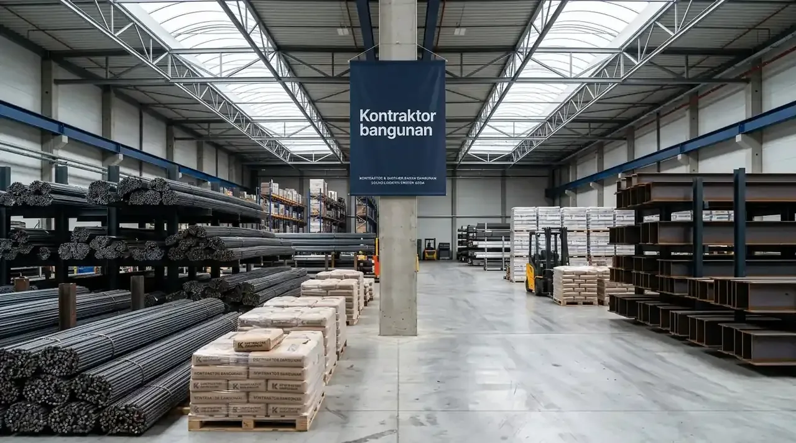

Mengapa Pemilihan Supplier Material Bangunan Mempengaruhi Profitabilitas Proyek?
Jawaban Langsung: Supplier terpercaya menjaga profitabilitas proyek dengan cara memangkas biaya rantai pasok, mencegah downtime pengerjaan akibat keterlambatan bahan, dan memberikan skema harga grosir.
Pemilihan mitra penyedia bahan bangunan berpengaruh langsung terhadap stabilitas arus kas dan ketepatan alokasi Rencana Anggaran Biaya (RAB) proyek. Pembelian material dari rantai pasok yang terfragmentasi sering memicu lonjakan biaya logistik, ketidakpastian tanggal penyerahan di lokasi pengerjaan, hingga keragaman kualitas barang yang tidak terstandar. Oleh karena itu, pengadaan terpusat melalui satu pintu menjadi langkah strategis bagi manajer pengadaan dan pengambil keputusan.
Berdasarkan laporan tahunan Analisis Rantai Pasok Konstruksi Nasional yang dirilis oleh Lembaga Pengembangan Jasa Konstruksi (LPJK) periode 2024–2025, ketidakpastian pengiriman bahan bangunan menyumbang hingga 28% dari total keterlambatan proyek komersial di Indonesia. Selain itu, data dari Asosiasi Logistik dan Hinterland Konstruksi tahun 2025 menunjukkan bahwa konsolidasi pengadaan bahan bangunan pada satu distributor utama mampu menekan biaya operasional logistik sebesar 15% hingga 22% dibandingkan skema pembelian terpisah dari toko retail eceran.
- Sertifikasi SNI Resmi: Memastikan besi tulangan, semen, dan komponen penahan beban memiliki dokumen Mill Test Report.
- Kapasitas Stockpile Gudang: Memiliki cadangan barang cukup untuk menjamin kelangsungan proyek bertahap.
- Ketepatan Logistik Site-to-Site: Pengiriman terjadwal langsung ke titik koordinat tanpa transit pihak ketiga.
- Fleksibilitas Term of Payment (TOP): Skema termin pembayaran yang sejalan dengan pencairan dana progres konstruksi.
Bagaimana Cara Menentukan Supplier Material Bangunan Lengkap Murah yang Terpercaya?
Jawaban Langsung: Tentukan supplier ideal dengan mengevaluasi kelengkapan katalog, kejelasan diskon grosir, ketersediaan armada logistik mandiri, serta skema pembayaran B2B yang fleksibel.
Menentukan penyedia bahan bangunan tidak cukup hanya berpatokan pada penawaran harga awal yang tampak terjangkau. Diperlukan evaluasi terhadap kapasitas gudang, legalitas usaha, serta transparansi skema kerja sama jangka panjang.
Kriteria utama yang wajib dievaluasi oleh tim procurement meliputi:
- Kelengkapan Katalog Produk: Ketersediaan material yang mencakup kebutuhan semen, besi beton SNI, bata ringan, baja ringan, hingga produk kelistrikan dan sanitari.
- Transparansi Harga dan Diskon Volume: Kejelasan sistem daftar harga berdasarkan kuantitas pesanan tanpa adanya biaya tersembunyi pada lembar kuitansi.
- Jangkauan dan Armada Pengiriman: Dukungan moda transportasi angkut mandiri yang siap menjangkau area proyek perkotaan maupun pelosok industri.
- Kemudahan Opsi Pembayaran: Fleksibilitas skema pembayaran B2B seperti Term of Payment (TOP) yang dapat disesuaikan dengan termin tahapan pengerjaan.

Penyediaan sampel dan display ragam material konstruksi premium: bata ringan, baja ringan galvanis, pipa sanitari, hingga cat pelapis pelindung.
Apa Saja Keunggulan Membeli Langsung dari Distributor Material Konstruksi?
Jawaban Langsung: Keunggulan utama meliputi perolehan harga grosir tingkat pertama, jaminan keaslian mutu spesifikasi pabrik, ketersediaan volume besar, serta ketepatan jadwal pengiriman logistik.
Membeli pasokan bahan langsung dari rantai utama distributor memberikan keuntungan kompetitif yang tidak dapat dipenuhi oleh toko retail biasa:
1. Harga Grosir Tanpa Perantara
Mengeliminasi jalur distribusi perantara memungkinkan Anda mendapatkan harga riil pabrikan untuk mengamankan margin efisiensi anggaran proyek.
2. Konsistensi Spesifikasi Mutu
Setiap batch material dijamin memiliki kerapatan, dimensi, dan kekuatan teknis presisi sesuai sertifikat resmi pabrikan.
3. Kuantitas Skala Besar
Kapasitas stockpile gudang siap memasok kebutuhan proyek bertingkat atau perumahan secara kontinu tanpa jeda pengerjaan.
4. Distribusi Just-In-Time
Pengiriman diatur sesuai tahapan kerja lapangan untuk menghemat area penyimpanan site dan mencegah kerusakan bahan.
Solusi Pengadaan Bahan Bangunan Terpadu Bersama Kontraktor Bangunan
Jawaban Langsung: Kontraktor bangunan menghadirkan solusi pengadaan bahan bangunan terintegrasi yang menggabungkan harga grosir bersaing, pendampingan estimasi volume material, serta pengiriman logistik yang handal.
Memahami kompleksitas pengadaan bahan konstruksi di era industri modern, Kontraktor Bangunan menghadirkan divisi pasokan material terpadu untuk melayani kebutuhan proyek perorangan, korporasi, hingga instansi. Kami mengombinasikan keunggulan jaring distributor dengan sistem manajemen logistik yang siap mendukung efisiensi pengerjaan Anda.
Sebagai jaringan penyedia supplier material bangunan lengkap murah, kami tidak hanya menjual produk tetapi juga memberikan bantuan teknis berupa perhitungan estimasi kebutuhan bahan secara presisi agar tidak terjadi over-budgeting. Silakan akses lini produk kami secara mendalam dan dapatkan penawaran harga khusus melalui kontak resmi kami.
Perbandingan Spesifikasi Layanan Pengadaan Material Proyek
Jawaban Langsung: Layanan dari Kontraktor bangunan unggul signifikan pada keterjangkauan harga grosir, skema pembayaran fleksibel, garansi sertifikasi mutu, serta integrasi angkutan logistik langsung ke lokasi proyek.
Untuk memberikan gambaran perbandingan operasional bagi tim procurement, berikut adalah tabel komparasi antara sistem pengadaan retail konvensional dengan layanan terpusat dari Kontraktor Bangunan:
| Parameter Evaluasi | Toko Eceran / Retail Biasa | Layanan Terpusat (Kontraktor Bangunan) |
|---|---|---|
| Harga & Marjin | Harga eceran tinggi dengan marjin toko | Harga grosir distributor langsung bersaing tinggi |
| Kapasitas Stok | Terbatas (Sering terjadi pembatasan kuantitas) | Kapasitas stockpile besar untuk proyek berskala tinggi |
| Sertifikasi Mutu | Garansi toko terbatas & tanpa sertifikat | Sertifikat SNI resmi & Mill Test Report terlampir |
| Skema Pembayaran | Tunai / Cash on Delivery (COD) instan | Fleksibel (Term of Payment / Termin Proyek B2B) |
| Manajemen Logistik | Sewa armada luar (Biaya ditanggung pembeli) | Armada pengiriman mandiri dengan penjadwalan site |
| Layanan Pendampingan | Hanya penjualan transaksi terputus | Bantuan perhitungan analisis kuantitas material gratis |
Bagaimana Cara Mengoptimalkan Anggaran Pengadaan Tanpa Mengorbankan Mutu?
Jawaban Langsung: Optimalkan anggaran melalui pemesanan massal terencana, pemilihan material ukuran standar, pemanfaatan bahan komposit modern, dan pembuatan kontrak payung jangka panjang.
Penghematan anggaran proyek tidak harus dilakukan dengan menurunkan mutu grade material. Terdapat pendekatan teknis yang efektif untuk menekan biaya pengadaan secara substansial:
- Pemesanan Massal Terencana (Bulk Order): Menyatukan daftar kebutuhan bahan untuk beberapa tahap pembangunan sekaligus agar masuk ke dalam kategori kuota harga grosir tertinggi.
- Standarisasi Ukuran dan Modul: Menggunakan material dengan ukuran standar pabrik untuk mengurangi sisa potongan (waste material) di lokasi proyek.
- Pemilihan Material Komposit Alternatif: Mengintegrasikan produk inovasi modern seperti bata ringan atau baja ringan yang menawarkan proses pasang lebih cepat serta durabilitas tinggi.
- Kerja Sama Kontrak Payung (Framework Agreement): Memfungsikan Kontraktor Bangunan sebagai penyedia tunggal melalui kesepakatan harga terikat guna mengunci fluktuasi harga bahan di pasar.
Pertanyaan yang Sering Diajukan (FAQ)
Kesimpulan Praktis
Menemukan supplier material bangunan lengkap murah dan bergaransi merupakan keputusan bisnis vital yang mempengaruhi efisiensi anggaran serta kualitas akhir proyek pengerjaan bangunan Anda. Dengan memanfaatkan rantai pasok terintegrasi, skema pembayaran B2B yang fleksibel, dan jadwal pengiriman yang presisi, Anda dapat menekan risiko cost over-run secara signifikan.
Jangan biarkan pengerjaan proyek Anda terhambat oleh masalah ketersediaan bahan atau fluktuasi harga eceran. Dapatkan kepastian harga, mutu material terjamin, dan pasokan melimpah langsung dari sumber terpercaya bersama Kontraktor Bangunan.